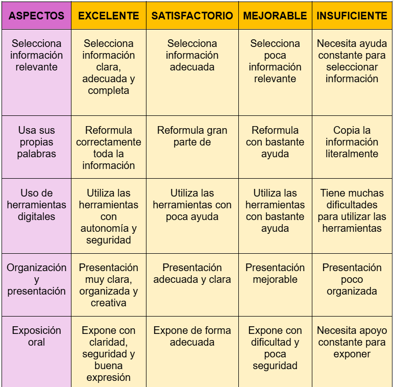

Evaluación
Para evaluar el proyecto “Guardianes digitales del planeta” se utilizarán diferentes instrumentos de evaluación que permitirán recoger información variada sobre el proceso de aprendizaje del alumnado.
La finalidad no será únicamente calificar, sino también ofrecer retroalimentación continua, detectar dificultades, valorar el desarrollo de la competencia digital y favorecer la mejora del proceso de enseñanza-aprendizaje.
Por ende, el primer instrumento de evaluación seleccionado es un rúbrica. Mediante esta se evaluará el producto digital final elaborado por el alumnado sobre los animales en peligro de extinción.
Se tendrán en cuenta aspectos relacionados con:
*La búsqueda y selección de información relevante
*La comprensión de la información
*El uso responsable de herramientas digitales
*La organización del contenido
*La creatividad y presentación visual
*La exposición oral
La rúbrica se utilizará durante las sesiones finales del proyecto, especialmente en la exposición oral y presentación del cartel o presentación digital.
El/la docente completará la rúbrica durante la exposición de cada grupo.
Los resultados permitirán:
*Detectar dificultades comunes.
*Comprobar si el alumnado ha comprendido realmente la información.
*Analizar el uso adecuado de las herramientas digitales.
*Valorar la capacidad de trabajo cooperativo.
Además, se podrán comparar los resultados entre grupos para identificar necesidades de refuerzo o apoyo.
Pueden surgir diversas variables tales como: diferentes niveles de competencia digital, nervios durante la exposición oral, participación desigual dentro de los grupos y dificultades técnicas durante la presentación. Para ello, se ofrecerá apoyo individualizado, tiempos flexibles y acompañamiento docente.
A continuación, se presenta el instrumento detallado:

En segundo lugar, se llevará a cabo la evaluación del alumnado a través de una lista de cotejo de observación. Esta permitirá realizar un seguimiento diario del trabajo del alumnado durante el proyecto empleándose y todas y cada una de las sesiones.
Se observarán aspectos como:
*Participación.
*Trabajo cooperativo.
*Uso responsable de dispositivos.
*Resolución de problemas técnicos.
*Respeto de las normas digitales.
Los datos se recogerán y se irán organizando de manera continua. La información recogida permitirá:
*Detectar dificultades rápidamente.
*Adaptar las actividades.
*Organizar apoyos.
*Identificar alumnado con mayor autonomía digital.
A lo largo del desarrollo de las sesiones pueden surgir variables tales como:
*Diferente ritmo de aprendizaje.
*Problemas técnicos del aula.
*Dificultades de organización en los grupos.
*Falta de participación de algunos alumnos.
En estos casos, se utilizarán agrupamientos flexibles, ayuda entre iguales y adaptación de tareas.
Seguidamente, se muestra la lista de cotejo de observación:

A modo de conclusión, es notable señalar que la combinación de diferentes instrumentos de evaluación permite obtener una visión más completa del aprendizaje del alumnado.
Además de evaluar el producto final, también se valorará el proceso, la participación, el trabajo cooperativo y el desarrollo de la competencia digital.
De esta forma, la evaluación se convierte en una herramienta de mejora continua tanto para el alumnado como para la práctica docente.